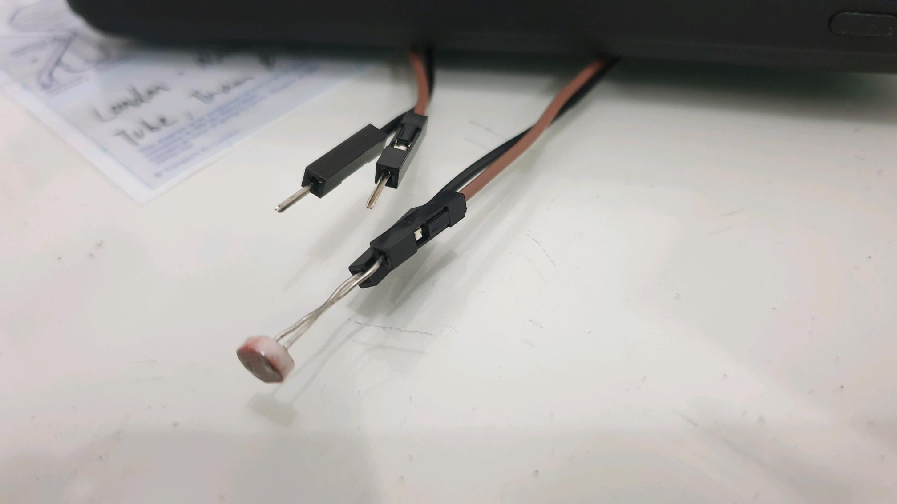
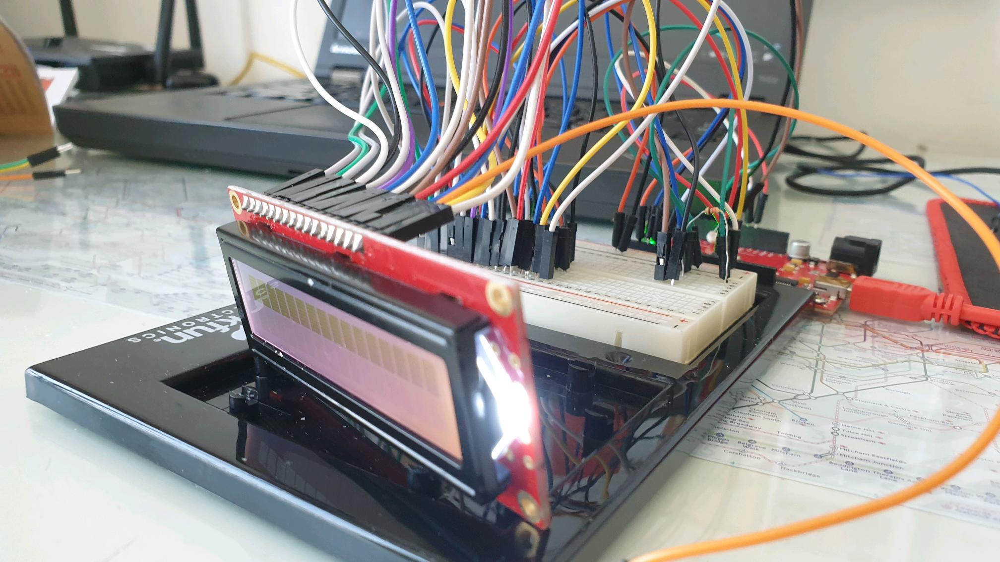
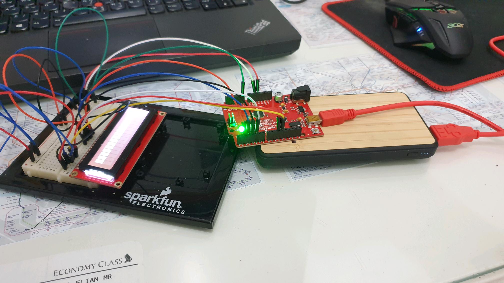
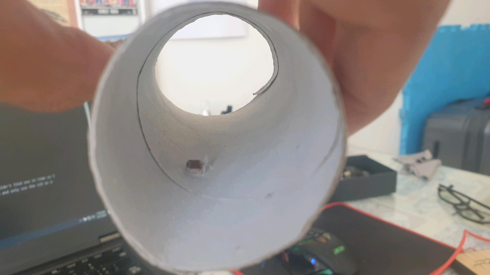
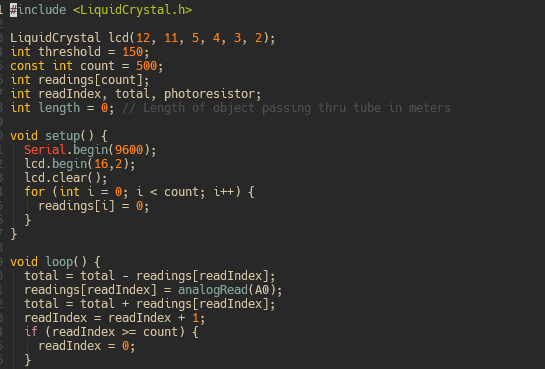

---
13 // Apr // 2023
3 min
A high-school project never really warrants any extra brainpower required, especially if it's ungraded and for competition but the time constraints and team pressure makes an absolutely great learning experience. Last month, my IB school decided to run a Group 4 project day(s) and well, other than the redundancy of an optional, 6-hour project stretched out to two days, the Arduino project went well for our group.
The prompt for the project was to create systems for a city on Mars and our group came up with a transportation system that would speed through Martian planes in a hyperloop-esque system. As the "Computer Scientist" and "Physicist" of the group, I was tasked with creating a monitoring system for the hyperloop speeds and thus came the idea of creating a lightgate.
A lightgate usually comes in pairs and is hooked up to a datalogger to either read the speed, velocity, acceleration or time between passing lightgates. To register a lightgate reading, the lightgate's light sensor reading would usually deviate enough to suggest that an object has passed through the lightgate. Standard stuff.
Lab-grade Lightgate
The project required calculating the speed of a train through the model tunnel, so fortunately for me, only one light sensor's reading is required (thankfully). The KY-018 photoresistor module acts as the lightgate's sensor. An LCD display also outputs the speed of the object passing through the tunnel.

System Schematics (full size image on Github)
I attached the photoresistor to the two female-to-male connectors so that the photoresistor sensor head could be placed in a cardboard tube in the model.
Photoresistor + Female-to-Male cables
It seemed appropriate for female-to-male connectors could be used on the LEDs to allow it to be connected on the top of the cardboard tube for easier viewing (and also a more polished model).
LED + Female-to-Male cables
In the end, I sided with it as I was planning to exhibit the model headless and my group really didn't want to lug around a behemoth of a gaming laptop just for this one exhibition.
System hooked up to a powerbank
The code for the board should first check the average reading of the first 10 readings to get the mean reading of the brightness. This allows for any negative deviations to register as the lightgate being used. As one photoresistor is attached, the length of the object planned to pass through the lightgate must be declared (in $km/h) to get an accurate speed reading so as the photoresistor's digital value gets lower than a certain average threshold, a digital timer will start to calculate the time taken for the object to pass then the value is converted into hours. After this, the final value should be displayed on the LCD.
I experienced a problem attempting to get the photoresistor to read any deviations when placed above.
Photoresistor on the Tube before
I just flipped the tube around to fix it.
Photoresistor on the Tube after
This is when I realized that I was missing a potentiometer. I couldn't find one in time so I decided to output the speed calculations on the computer instead and only use the LCD as a proof-of-concept.
Code Snippet on Laptop
The timer module for Arduino is an absolute godsend, using only two functions to be able to calculate time taken. I highly recommend it for anyone needing a timer function for Arduino.
Future Stuff
One glaring issue was the concession I made with the average reading. While this probably could've been easily fixed by writing each value to an array of 10, time constraints (and severe procrastination) hampered it. It probably could've been added in 10 mins with an extra 10 minutes just for testing.
Lightgates are also usually upright but this one's upside down. Lab-grade lightgates use invisible lasers to calculate when and how fast an object breaks or shortens a laser's length so an analog sensor is caveman technology compared to a lab-grade lightgate.
Another problem is how the timer was counted. If I were creating this in a non-Arduino environment, my first instinct would've been using difference in Unix time but I found as I found a solution in the Timer module, which is way easier than Unix time difference. Timer isn't super efficient though, with a few tests showing different values for the same delay time but I guess 5 decimal places don't really matter.

The board on display (with a working LED + Photoresistor)
Source Files
Github Page---
By nail_